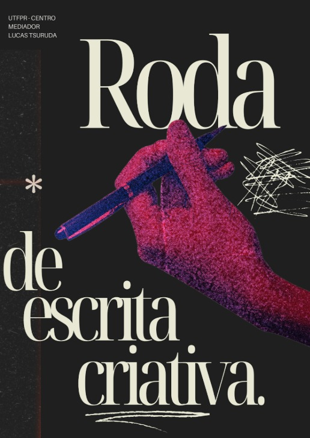

Obra Coletiva • 2026
Antologia da Roda de Escrita Criativa
Reunindo textos dos participantes da primeira Roda de Escrita de 2026, essa obra se propõe a ser um exercício coletivo. A cada dez minutos os textos eram trocados entre os participantes, criando uma obra única e tripla de forma simultânea. Toda a obra foi editada, revisada e diagramada de forma voluntária por seus participantes, transformando um exercício de escrita em uma oportunidade de profissionalização, experimentação e publicação conjunta.
Acesse aqui